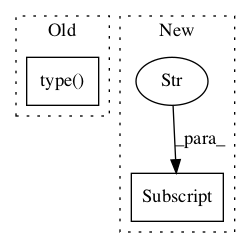

Pattern ID :32

Before Change
if self._parser.shift():
tok = self._parser.stack()[-1]
self._lastoper1["text"] = "Shift:"
self._lastoper2["text"] = "%r" % tok.type()
if self._animate.get():
self._animate_shift()
else:
self._redraw()
After Change
if self._parser.shift():
tok = self._parser.stack()[-1]
self._lastoper1["text"] = "Shift:"
self._lastoper2["text"] = "%r" % tok["TEXT"]
if self._animate.get():
self._animate_shift()
else:
self._redraw()
In pattern: SUPERPATTERN
Frequency: 3
Non-data size: 2
Instances
Fragment ID: 71585
Project Name: nltk/nltk
Commit Name: 38883b3adf2f4001c8b38cf12ed07172aea6906d
Time: 2004-03-18
Author: edloper@ldc.upenn.edu
File Name: src/nltk/draw/srparser.py
Class Name: ShiftReduceParserDemo
Method Name: shift
Fragment ID: 71584
Project Name: nltk/nltk
Commit Name: 38883b3adf2f4001c8b38cf12ed07172aea6906d
Time: 2004-03-18
Author: edloper@ldc.upenn.edu
File Name: src/nltk/draw/rdparser.py
Class Name: RecursiveDescentParserDemo
Method Name: edit_sentence
Fragment ID: 71586
Project Name: nltk/nltk
Commit Name: 38883b3adf2f4001c8b38cf12ed07172aea6906d
Time: 2004-03-18
Author: edloper@ldc.upenn.edu
File Name: src/nltk/draw/srparser.py
Class Name: ShiftReduceParserDemo
Method Name: edit_sentence